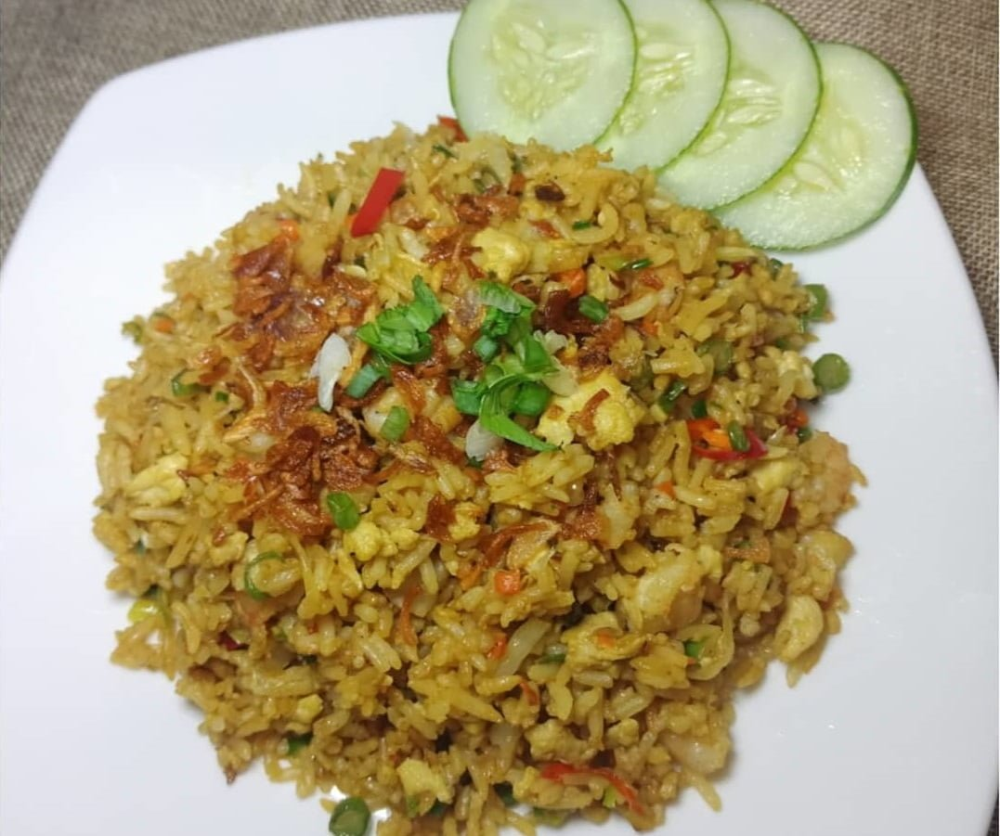

Nasi Goreng

Description
Nasi goreng is essentially Indonesia's take on fried rice. In addition to kecap manis, the country's ubiquitous sweet soy sauce, terasi (Indonesian shrimp paste) is what sets nasi goreng apart from other fried-rice variations you'll see in other countries.
Terasi is an umami bomb that pervades both your kitchen and your senses. If you can't find it easily, feel free to substitute another Southeast Asian shrimp paste, or omit it—you’ll be making what my mom calls nasi goreng cina, or Chinese fried rice, which is the version she made for us when I was growing up.
Ingredients
For the Spice Paste :
- 2 small shallots (2 ounces; 55 g), roughly chopped
- 3 medium cloves garlic
- 1 large fresh chile, such as Fresno or Holland, stemmed and seeded, or 1 teaspoon sambal oelek, such as Huy Fong
- 1/2 teaspoon terasi (Indonesian shrimp paste), optional
For the Nasi Goreng :
- 4 cups cold cooked jasmine rice (21 ounces; 600 g) or other medium- to long-grain rice
- 2 tablespoons (30 ml) neutral oil, such as canola or sunflower oil
- 2 tablespoons (30 ml) kecap manis, plus more for drizzling
- 2 teaspoons (10 ml) soy sauce
- Kosher salt
- Ground white pepper
To Serve :
- fried eggs, cooked sunny-side up or over easy (optional)
- Sliced cucumbers (optional)
- Sliced tomatoes (optional)
- Fried shallots (optional)
Steps :
For the Spice Paste :
- Add half the shallots to a mortar and grind with pestle until a coarse purée forms. Add remaining shallots, followed by garlic, chile, and terasi (if using), grinding with pestle until each ingredient is mostly incorporated before adding the next. The final paste should resemble thick oatmeal in texture. Alternatively, combine all spice paste ingredients in a small food processor and process until they form a paste.
For the Nasi Goreng :
- If using day-old rice, transfer rice to a bowl and break rice up with your hands into individual grains.
- Heat oil in a large wok or skillet over high heat until shimmering. Add spice paste and cook, stirring constantly and scraping bottom of wok or pan to prevent paste from burning, until a pungent smell permeates your kitchen and paste turns a few shades darker, 2 to 3 minutes. Reduce heat to medium at any time if paste appears to be browning too quickly.
- Add rice to wok and stir to coat with spice paste. Add kecap manis and soy sauce. Stir and cook until rice is evenly colored and hot throughout. Season with salt and white pepper.
- Divide rice between two plates and top each plate of rice with a fried egg. Garnish with cucumber and tomato slices and shower with fried shallots, if you like. Serve immediately with kecap manis alongside for drizzling.Divide rice between two plates and top each plate of rice with a fried egg. Garnish with cucumber and tomato slices and shower with fried shallots, if you like. Serve immediately with kecap manis alongside for drizzling.
Home